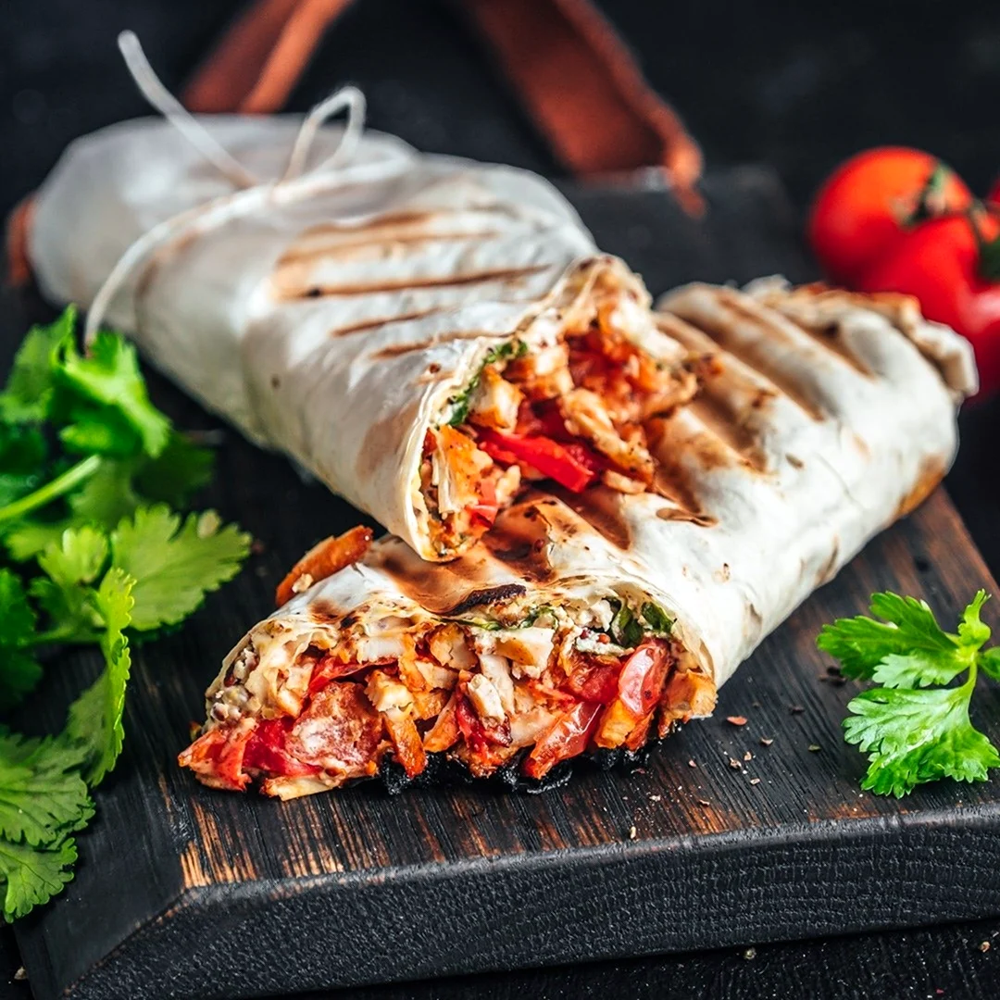

Здесь вы найдете увлекательную историю происхождения шаурмы, начиная с ее древних корней в Восточных странах и до современных интерпретаций в различных культурах. Мы расскажем вам о том, как шаурма стала популярным блюдом в разных странах, о ее эволюции и трансформациях под влиянием местных традиций и кулинарных предпочтений.
Шаурма — это популярное ближневосточное блюдо, состоящее из мяса (обычно курицы, ягнятины или баранины), обжаренного на вертеле, завёрнутого в лаваш или питу, с добавлением капусты, свежего огурца, репчатого лука, чесночного соуса и специй. Употребляется без использования столовых приборов. История происхождения шаурмы связана с турецким словом çevirme, которое означает «заворачивать». В Османской империи мясо готовилось на горизонтальных и вертикальных грилях уже в XVII веке. Современное название «дёнер-кебаб» появилось в Берлине в 1970-х годах благодаря двум гастарбайтерам из Турции, Кадиру Нурманну и Мехмету Айгуну. Они адаптировали традиционное блюдо для немецких потребителей, превратив его в удобный перекус на ходу.
Погрузитесь в увлекательный мир шаурмы, узнайте об истории ее имени, этимологии и значении в разных языках. Мы расскажем вам о том, как шаурма стала символом слияния культур и вкусов, о ее путешествии по всему миру и о том, как каждая страна придала этому блюду свой неповторимый оттенок.
Присоединяйтесь к нам в увлекательном путешествии по истории и происхождению шаурмы в разных странах! Давайте вместе исследовать, узнавать и наслаждаться этим удивительным блюдом. Добро пожаловать в мир шаурмы!